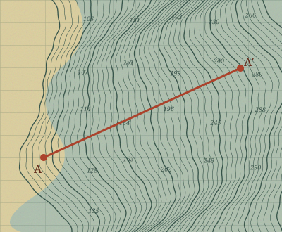
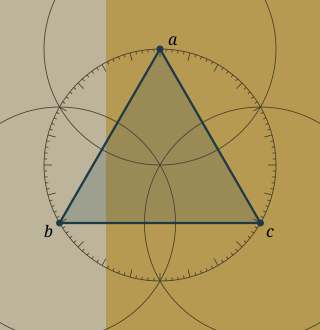

Skip to research
Logan Chalmers
0°
Research
01
Oceanography
02
Mathematics
Scroll to explore ↓
Research index

01 / Oceanography
Ocean model explorer
Explore the model ↗

02 / Mathematics
Mathematics
Google Scholar ↗
arXiv ↗
Preprints.org ↗